chord-simple · son
GEÇTİ · kapı farkı %0.004 · kapı SSIM 0.99970 · ham fark %0.023 · ham SSIM 0.99952 · aynı Gauss çekirdeği σ=0.8 · yapısal 1/1
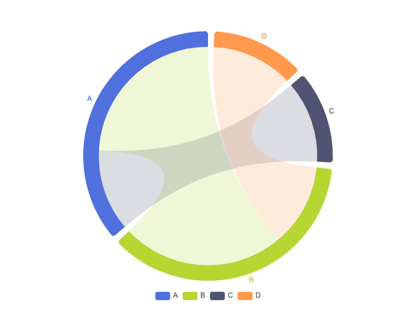
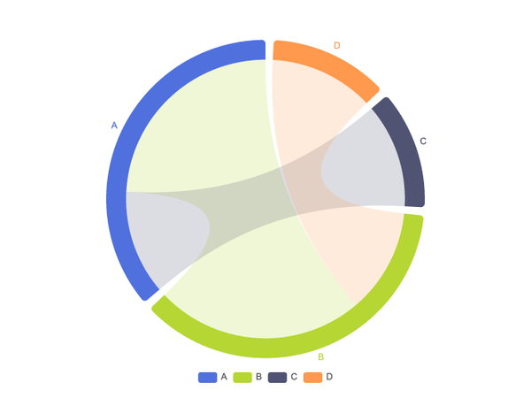
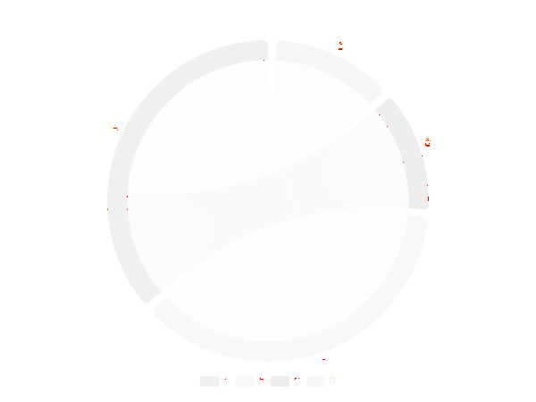
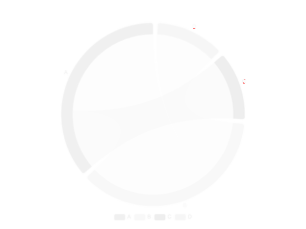
pixelmatch 0.1 · değişen piksel ≤ %1 · SSIM ≥ 0.99. Yoğun tipografi profili varsa değişmeyen eşikler iki görüntüye de aynı Gauss çekirdeği uygulandıktan sonra değerlendirilir; ham metrik ve ham fark daima gösterilir.
GEÇTİ · kapı farkı %0.004 · kapı SSIM 0.99970 · ham fark %0.023 · ham SSIM 0.99952 · aynı Gauss çekirdeği σ=0.8 · yapısal 1/1




GEÇTİ · kapı farkı %0.006 · kapı SSIM 0.99975 · ham fark %0.031 · ham SSIM 0.99960 · aynı Gauss çekirdeği σ=0.8 · yapısal 1/1
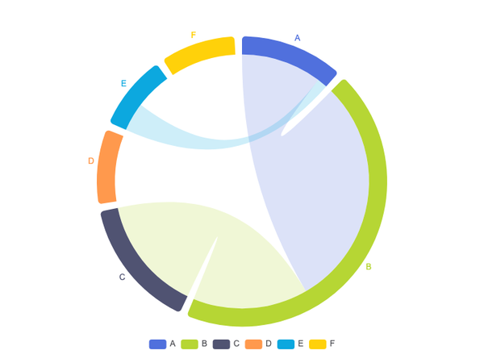
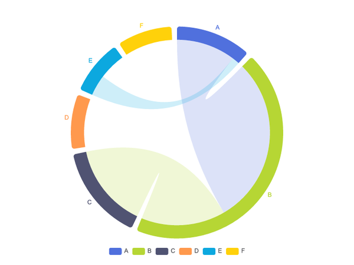
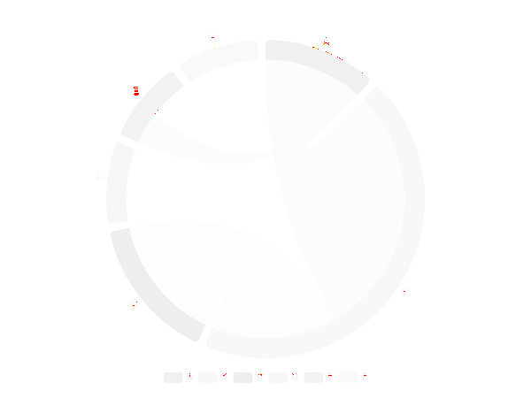
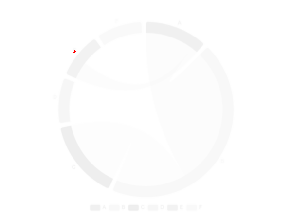
GEÇTİ · kapı farkı %0.071 · kapı SSIM 0.99911 · ham fark %0.254 · ham SSIM 0.99854 · aynı Gauss çekirdeği σ=0.8 · yapısal 1/1
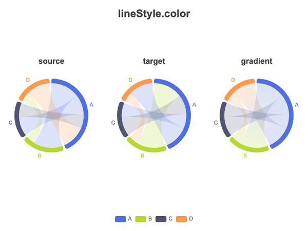
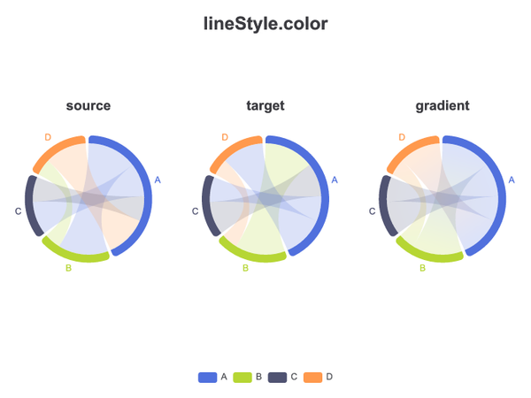
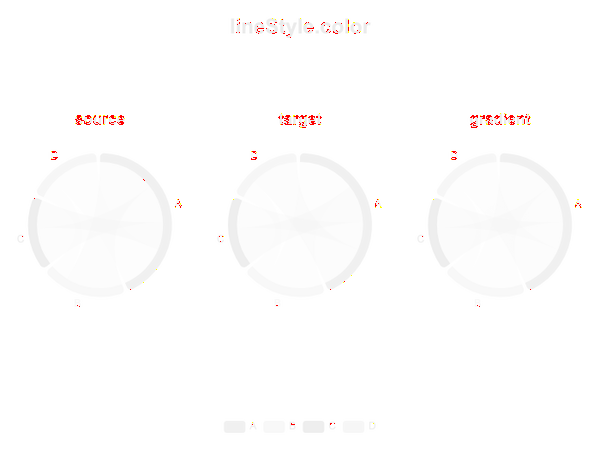
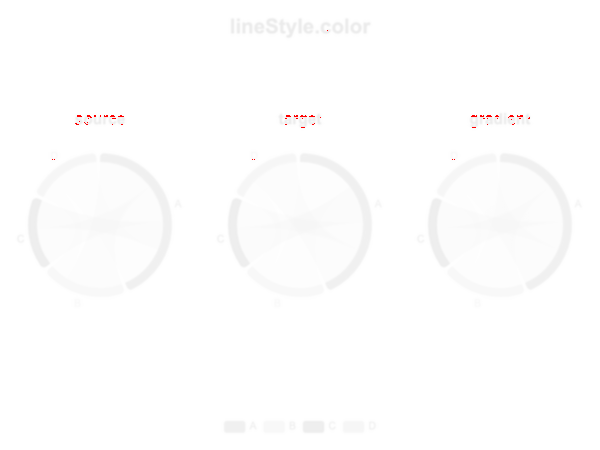
GEÇTİ · kapı farkı %0.001 · kapı SSIM 0.99925 · ham fark %0.026 · ham SSIM 0.99909 · aynı Gauss çekirdeği σ=0.8 · yapısal 1/1
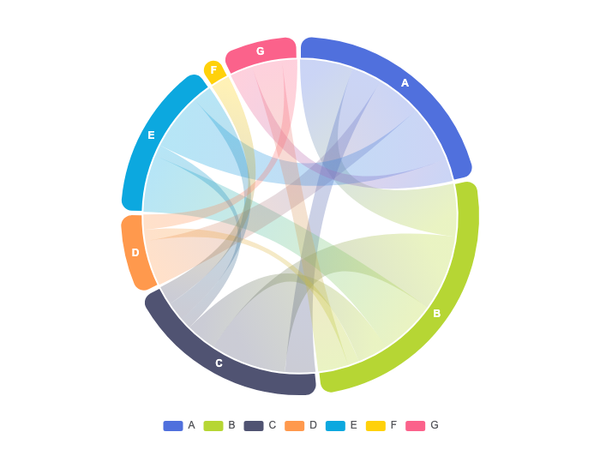
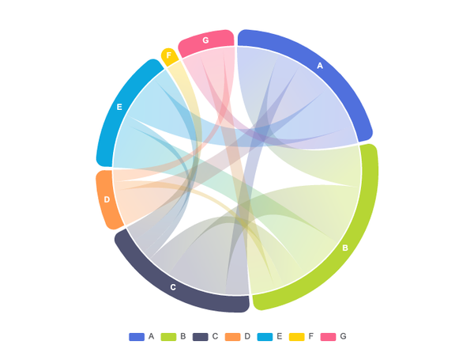
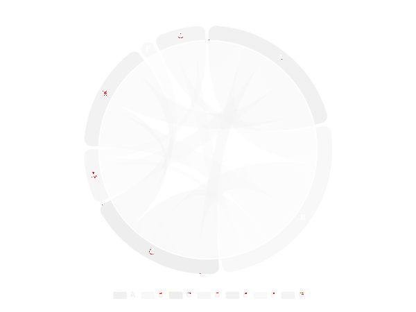
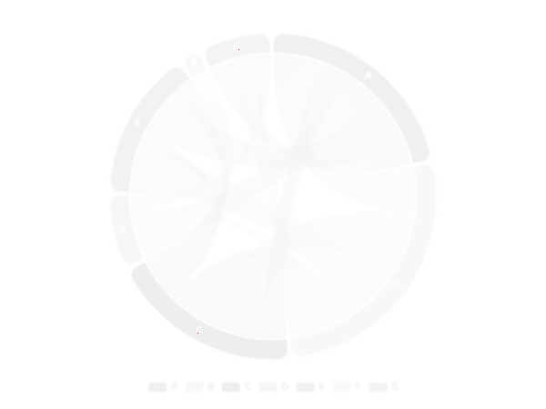